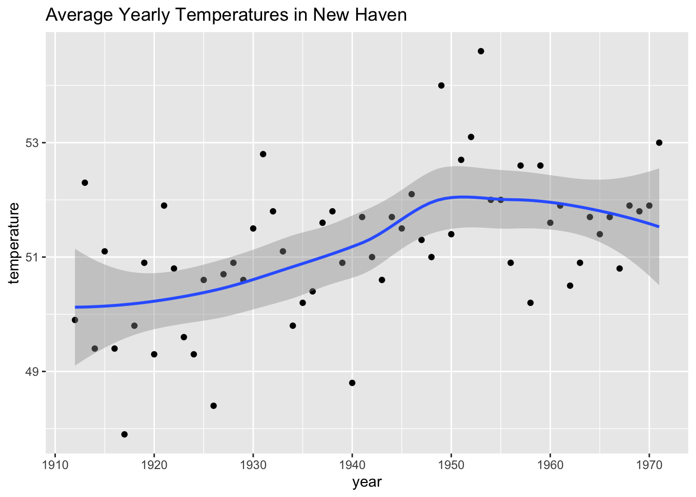
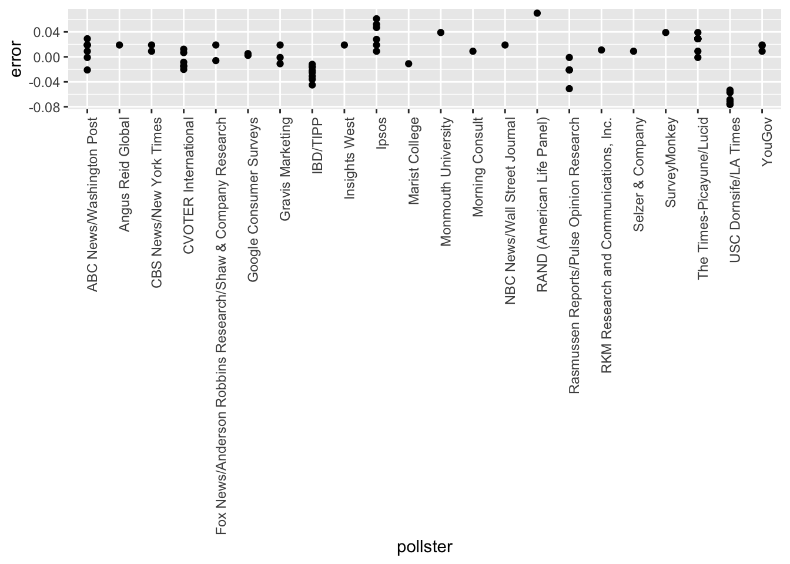

4 Section 3 Overview
In Section 3, you will look at confidence intervals and p-values.
After completing Section 3, you will be able to:
- Calculate confidence intervals of difference sizes around an estimate.
- Understand that a confidence interval is a random interval with the given probability of falling on top of the parameter.
- Explain the concept of “power” as it relates to inference.
- Understand the relationship between p-values and confidence intervals and explain why reporting confidence intervals is often preferable.
4.1 Confidence Intervals
The textbook for this section is available here.
Key points
- We can use statistical theory to compute the probability that a given interval contains the true parameter \(p\).
- 95% confidence intervals are intervals constructed to have a 95% chance of including \(p\). The margin of error is approximately a 95% confidence interval.
- The start and end of these confidence intervals are random variables.
- To calculate any size confidence interval, we need to calculate the value \(z\) for which \(\mbox{Pr}(-z \le Z \le z)\) equals the desired confidence. For example, a 99% confidence interval requires calculating \(z\) for \(\mbox{Pr}(-z \le Z \le z) = 0.99\).
- For a confidence interval of size \(q\), we solve for \(z = 1 - \frac{1 - q}{2}\).
- To determine a 95% confidence interval, use
z <- qnorm(0.975). This value is slightly smaller than 2 times the standard error.
Code: geom_smooth confidence interval example
The shaded area around the curve is related to the concept of confidence intervals.
data("nhtemp")
data.frame(year = as.numeric(time(nhtemp)), temperature = as.numeric(nhtemp)) %>%
ggplot(aes(year, temperature)) +
geom_point() +
geom_smooth() +
ggtitle("Average Yearly Temperatures in New Haven")## `geom_smooth()` using method = 'loess' and formula 'y ~ x'
Code: Monte Carlo simulation of confidence intervals
Note that to compute the exact 95% confidence interval, we would use qnorm(.975)*SE_hat instead of 2*SE_hat.
p <- 0.45
N <- 1000
X <- sample(c(0,1), size = N, replace = TRUE, prob = c(1-p, p)) # generate N observations
X_hat <- mean(X) # calculate X_hat
SE_hat <- sqrt(X_hat*(1-X_hat)/N) # calculate SE_hat, SE of the mean of N observations
c(X_hat - 2*SE_hat, X_hat + 2*SE_hat) # build interval of 2*SE above and below mean## [1] 0.4135691 0.4764309Code: Solving for \(z\) with qnorm
z <- qnorm(0.995) # calculate z to solve for 99% confidence interval
pnorm(qnorm(0.995)) # demonstrating that qnorm gives the z value for a given probability## [1] 0.995pnorm(qnorm(1-0.995)) # demonstrating symmetry of 1-qnorm## [1] 0.005pnorm(z) - pnorm(-z) # demonstrating that this z value gives correct probability for interval## [1] 0.994.2 A Monte Carlo Simulation for Confidence Intervals
The textbook for this section is available here.
Key points
- We can run a Monte Carlo simulation to confirm that a 95% confidence interval contains the true value of \(p\) 95% of the time.
- A plot of confidence intervals from this simulation demonstrates that most intervals include \(p\), but roughly 5% of intervals miss the true value of \(p\).
Code: Monte Carlo simulation
Note that to compute the exact 95% confidence interval, we would use qnorm(.975)*SE_hat instead of 2*SE_hat.
B <- 10000
inside <- replicate(B, {
X <- sample(c(0,1), size = N, replace = TRUE, prob = c(1-p, p))
X_hat <- mean(X)
SE_hat <- sqrt(X_hat*(1-X_hat)/N)
between(p, X_hat - 2*SE_hat, X_hat + 2*SE_hat) # TRUE if p in confidence interval
})
mean(inside)## [1] 0.95664.3 The Correct Language
The textbook for this section is available here.
Key points
- The 95% confidence intervals are random, but \(p\) is not random.
- 95% refers to the probability that the random interval falls on top of \(p\).
- It is technically incorrect to state that \(p\) has a 95% chance of being in between two values because that implies \(p\) is random.
4.4 Power
The textbook for this section is available here.
Key points
- If we are trying to predict the result of an election, then a confidence interval that includes a spread of 0 (a tie) is not helpful.
- A confidence interval that includes a spread of 0 does not imply a close election, it means the sample size is too small.
- Power is the probability of detecting an effect when there is a true effect to find. Power increases as sample size increases, because larger sample size means smaller standard error.
Code: Confidence interval for the spread with sample size of 25
Note that to compute the exact 95% confidence interval, we would use c(-qnorm(.975), qnorm(.975)) instead of 1.96.
N <- 25
X_hat <- 0.48
(2*X_hat - 1) + c(-2, 2)*2*sqrt(X_hat*(1-X_hat)/N)## [1] -0.4396799 0.35967994.5 p-Values
The textbook for this section is available here.
Key points
- The null hypothesis is the hypothesis that there is no effect. In this case, the null hypothesis is that the spread is 0, or \(p = 0.5\).
- The p-value is the probability of detecting an effect of a certain size or larger when the null hypothesis is true.
- We can convert the probability of seeing an observed value under the null hypothesis into a standard normal random variable. We compute the value of \(z\) that corresponds to the observed result, and then use that \(z\) to compute the p-value.
- If a 95% confidence interval does not include our observed value, then the p-value must be smaller than 0.05.
- It is preferable to report confidence intervals instead of p-values, as confidence intervals give information about the size of the estimate and p-values do not.
Code: Computing a p-value for observed spread of 0.02
N <- 100 # sample size
z <- sqrt(N) * 0.02/0.5 # spread of 0.02
1 - (pnorm(z) - pnorm(-z))## [1] 0.68915654.6 Another Explanation of p-Values
The p-value is the probability of observing a value as extreme or more extreme than the result given that the null hypothesis is true.
In the context of the normal distribution, this refers to the probability of observing a Z-score whose absolute value is as high or higher than the Z-score of interest.
Suppose we want to find the p-value of an observation 2 standard deviations larger than the mean. This means we are looking for anything with \(|z| \ge 2\).
Graphically, the p-value gives the probability of an observation that’s at least as far away from the mean or further. This plot shows a standard normal distribution (centered at \(z = 0\)) with a standard deviation of 1). The shaded tails are the region of the graph that are 2 standard deviations or more away from the mean.

Standard normal distribution (centered at z=0 with a standard deviation of 1
The p-value is the proportion of area under a normal curve that has z-scores as extreme or more extreme than the given value - the tails on this plot of a normal distribution are shaded to show the region corresponding to the p-value.
The right tail can be found with 1-pnorm(2). We want to have both tails, though, because we want to find the probability of any observation as far away from the mean or farther, in either direction. (This is what’s meant by a two-tailed p-value.) Because the distribution is symmetrical, the right and left tails are the same size and we know that our desired value is just 2*(1-pnorm(2)).
Recall that, by default, pnorm() gives the CDF for a normal distribution with a mean of \(\mu = 0\) and standard deviation of \(\sigma = 1\). To find p-values for a given z-score z in a normal distribution with mean mu and standard deviation sigma, use 2*(1-pnorm(z, mu, sigma)) instead.
4.7 Assessment - Confidence Intervals and p-Values
- For the following exercises, we will use actual poll data from the 2016 election.
The exercises will contain pre-loaded data from the dslabs package.
library(dslabs)
data("polls_us_election_2016")We will use all the national polls that ended within a few weeks before the election.
Assume there are only two candidates and construct a 95% confidence interval for the election night proportion \(p\).
# Load the data
data(polls_us_election_2016)
# Generate an object `polls` that contains data filtered for polls that ended on or after October 31, 2016 in the United States
polls <- filter(polls_us_election_2016, enddate >= "2016-10-31" & state == "U.S.")
# How many rows does `polls` contain? Print this value to the console.
nrow(polls)## [1] 70# Assign the sample size of the first poll in `polls` to a variable called `N`. Print this value to the console.
N <- head(polls$samplesize,1)
N## [1] 2220# For the first poll in `polls`, assign the estimated percentage of Clinton voters to a variable called `X_hat`. Print this value to the console.
X_hat <- (head(polls$rawpoll_clinton,1)/100)
X_hat## [1] 0.47# Calculate the standard error of `X_hat` and save it to a variable called `se_hat`. Print this value to the console.
se_hat <- sqrt(X_hat*(1-X_hat)/N)
se_hat## [1] 0.01059279# Use `qnorm` to calculate the 95% confidence interval for the proportion of Clinton voters. Save the lower and then the upper confidence interval to a variable called `ci`.
ci <- c(X_hat - qnorm(0.975)*se_hat, X_hat + qnorm(0.975)*se_hat)
ci## [1] 0.4492385 0.4907615- Create a new object called
pollster_resultsthat contains the pollster’s name, the end date of the poll, the proportion of voters who declared a vote for Clinton, the standard error of this estimate, and the lower and upper bounds of the confidence interval for the estimate.
# The `polls` object that filtered all the data by date and nation has already been loaded. Examine it using the `head` function.
head(polls)## state startdate enddate pollster grade samplesize population rawpoll_clinton rawpoll_trump rawpoll_johnson rawpoll_mcmullin
## 1 U.S. 2016-11-03 2016-11-06 ABC News/Washington Post A+ 2220 lv 47.00 43.00 4.00 NA
## 2 U.S. 2016-11-01 2016-11-07 Google Consumer Surveys B 26574 lv 38.03 35.69 5.46 NA
## 3 U.S. 2016-11-02 2016-11-06 Ipsos A- 2195 lv 42.00 39.00 6.00 NA
## 4 U.S. 2016-11-04 2016-11-07 YouGov B 3677 lv 45.00 41.00 5.00 NA
## 5 U.S. 2016-11-03 2016-11-06 Gravis Marketing B- 16639 rv 47.00 43.00 3.00 NA
## 6 U.S. 2016-11-03 2016-11-06 Fox News/Anderson Robbins Research/Shaw & Company Research A 1295 lv 48.00 44.00 3.00 NA
## adjpoll_clinton adjpoll_trump adjpoll_johnson adjpoll_mcmullin
## 1 45.20163 41.72430 4.626221 NA
## 2 43.34557 41.21439 5.175792 NA
## 3 42.02638 38.81620 6.844734 NA
## 4 45.65676 40.92004 6.069454 NA
## 5 46.84089 42.33184 3.726098 NA
## 6 49.02208 43.95631 3.057876 NA# Create a new object called `pollster_results` that contains columns for pollster name, end date, X_hat, se_hat, lower confidence interval, and upper confidence interval for each poll.
polls <- mutate(polls, X_hat = polls$rawpoll_clinton/100, se_hat = sqrt(X_hat*(1-X_hat)/polls$samplesize), lower = X_hat - qnorm(0.975)*se_hat, upper = X_hat + qnorm(0.975)*se_hat)
pollster_results <- select(polls, pollster, enddate, X_hat, se_hat, lower, upper)
pollster_results## pollster enddate X_hat se_hat lower upper
## 1 ABC News/Washington Post 2016-11-06 0.4700 0.010592790 0.4492385 0.4907615
## 2 Google Consumer Surveys 2016-11-07 0.3803 0.002978005 0.3744632 0.3861368
## 3 Ipsos 2016-11-06 0.4200 0.010534681 0.3993524 0.4406476
## 4 YouGov 2016-11-07 0.4500 0.008204286 0.4339199 0.4660801
## 5 Gravis Marketing 2016-11-06 0.4700 0.003869218 0.4624165 0.4775835
## 6 Fox News/Anderson Robbins Research/Shaw & Company Research 2016-11-06 0.4800 0.013883131 0.4527896 0.5072104
## 7 CBS News/New York Times 2016-11-06 0.4500 0.013174309 0.4241788 0.4758212
## 8 NBC News/Wall Street Journal 2016-11-05 0.4400 0.013863610 0.4128278 0.4671722
## 9 IBD/TIPP 2016-11-07 0.4120 0.014793245 0.3830058 0.4409942
## 10 Selzer & Company 2016-11-06 0.4400 0.017560908 0.4055813 0.4744187
## 11 Angus Reid Global 2016-11-04 0.4800 0.014725994 0.4511376 0.5088624
## 12 Monmouth University 2016-11-06 0.5000 0.018281811 0.4641683 0.5358317
## 13 Marist College 2016-11-03 0.4400 0.016190357 0.4082675 0.4717325
## 14 The Times-Picayune/Lucid 2016-11-07 0.4500 0.009908346 0.4305800 0.4694200
## 15 USC Dornsife/LA Times 2016-11-07 0.4361 0.009096403 0.4182714 0.4539286
## 16 RKM Research and Communications, Inc. 2016-11-05 0.4760 0.015722570 0.4451843 0.5068157
## 17 CVOTER International 2016-11-06 0.4891 0.012400526 0.4647954 0.5134046
## 18 Morning Consult 2016-11-05 0.4500 0.012923005 0.4246714 0.4753286
## 19 SurveyMonkey 2016-11-06 0.4700 0.001883809 0.4663078 0.4736922
## 20 Rasmussen Reports/Pulse Opinion Research 2016-11-06 0.4500 0.012845233 0.4248238 0.4751762
## 21 Insights West 2016-11-07 0.4900 0.016304940 0.4580429 0.5219571
## 22 RAND (American Life Panel) 2016-11-01 0.4370 0.010413043 0.4165908 0.4574092
## 23 Fox News/Anderson Robbins Research/Shaw & Company Research 2016-11-03 0.4550 0.014966841 0.4256655 0.4843345
## 24 CBS News/New York Times 2016-11-01 0.4500 0.016339838 0.4179745 0.4820255
## 25 ABC News/Washington Post 2016-11-05 0.4700 0.011340235 0.4477735 0.4922265
## 26 Ipsos 2016-11-04 0.4300 0.010451057 0.4095163 0.4504837
## 27 ABC News/Washington Post 2016-11-04 0.4800 0.012170890 0.4561455 0.5038545
## 28 YouGov 2016-11-06 0.4290 0.001704722 0.4256588 0.4323412
## 29 IBD/TIPP 2016-11-06 0.4070 0.015337369 0.3769393 0.4370607
## 30 ABC News/Washington Post 2016-11-03 0.4700 0.013249383 0.4440317 0.4959683
## 31 IBD/TIPP 2016-11-03 0.4440 0.016580236 0.4115033 0.4764967
## 32 IBD/TIPP 2016-11-05 0.4300 0.016475089 0.3977094 0.4622906
## 33 ABC News/Washington Post 2016-11-02 0.4700 0.014711237 0.4411665 0.4988335
## 34 ABC News/Washington Post 2016-11-01 0.4700 0.014610041 0.4413648 0.4986352
## 35 ABC News/Washington Post 2016-10-31 0.4600 0.014496630 0.4315871 0.4884129
## 36 Ipsos 2016-11-03 0.4320 0.011018764 0.4104036 0.4535964
## 37 IBD/TIPP 2016-11-04 0.4420 0.017514599 0.4076720 0.4763280
## 38 YouGov 2016-11-01 0.4600 0.014193655 0.4321809 0.4878191
## 39 IBD/TIPP 2016-10-31 0.4460 0.015579317 0.4154651 0.4765349
## 40 Ipsos 2016-11-02 0.4550 0.011358664 0.4327374 0.4772626
## 41 Rasmussen Reports/Pulse Opinion Research 2016-11-03 0.4400 0.012816656 0.4148798 0.4651202
## 42 The Times-Picayune/Lucid 2016-11-06 0.4500 0.009786814 0.4308182 0.4691818
## 43 Ipsos 2016-11-01 0.4470 0.011810940 0.4238510 0.4701490
## 44 IBD/TIPP 2016-11-02 0.4400 0.016858185 0.4069586 0.4730414
## 45 IBD/TIPP 2016-11-01 0.4400 0.016907006 0.4068629 0.4731371
## 46 Rasmussen Reports/Pulse Opinion Research 2016-11-02 0.4200 0.012743626 0.3950230 0.4449770
## 47 Ipsos 2016-10-31 0.4400 0.012973281 0.4145728 0.4654272
## 48 The Times-Picayune/Lucid 2016-11-05 0.4500 0.009898535 0.4305992 0.4694008
## 49 Rasmussen Reports/Pulse Opinion Research 2016-10-31 0.4400 0.012816656 0.4148798 0.4651202
## 50 Google Consumer Surveys 2016-10-31 0.3769 0.003107749 0.3708089 0.3829911
## 51 CVOTER International 2016-11-05 0.4925 0.012609413 0.4677860 0.5172140
## 52 Rasmussen Reports/Pulse Opinion Research 2016-11-01 0.4400 0.012816656 0.4148798 0.4651202
## 53 CVOTER International 2016-11-04 0.4906 0.012998976 0.4651225 0.5160775
## 54 The Times-Picayune/Lucid 2016-11-04 0.4500 0.009830663 0.4307323 0.4692677
## 55 USC Dornsife/LA Times 2016-11-06 0.4323 0.009144248 0.4143776 0.4502224
## 56 CVOTER International 2016-11-03 0.4853 0.013381202 0.4590733 0.5115267
## 57 The Times-Picayune/Lucid 2016-11-03 0.4400 0.009684792 0.4210182 0.4589818
## 58 USC Dornsife/LA Times 2016-11-05 0.4263 0.009047108 0.4085680 0.4440320
## 59 CVOTER International 2016-11-02 0.4878 0.013711286 0.4609264 0.5146736
## 60 USC Dornsife/LA Times 2016-11-04 0.4256 0.009046705 0.4078688 0.4433312
## 61 CVOTER International 2016-11-01 0.4881 0.013441133 0.4617559 0.5144441
## 62 The Times-Picayune/Lucid 2016-11-02 0.4400 0.009697721 0.4209928 0.4590072
## 63 Gravis Marketing 2016-10-31 0.4600 0.006807590 0.4466574 0.4733426
## 64 USC Dornsife/LA Times 2016-11-03 0.4338 0.009106200 0.4159522 0.4516478
## 65 The Times-Picayune/Lucid 2016-11-01 0.4300 0.009677647 0.4110322 0.4489678
## 66 USC Dornsife/LA Times 2016-11-02 0.4247 0.009119319 0.4068265 0.4425735
## 67 Gravis Marketing 2016-11-02 0.4700 0.010114336 0.4501763 0.4898237
## 68 USC Dornsife/LA Times 2016-11-01 0.4236 0.009015504 0.4059299 0.4412701
## 69 The Times-Picayune/Lucid 2016-10-31 0.4200 0.009679479 0.4010286 0.4389714
## 70 USC Dornsife/LA Times 2016-10-31 0.4328 0.008834895 0.4154839 0.4501161- The final tally for the popular vote was Clinton 48.2% and Trump 46.1%. Add a column called
hittopollster_resultsthat states if the confidence interval included the true proportion \(p=0.482\) or not. What proportion of confidence intervals included \(p\)?
# The `pollster_results` object has already been loaded. Examine it using the `head` function.
head(pollster_results)## pollster enddate X_hat se_hat lower upper
## 1 ABC News/Washington Post 2016-11-06 0.4700 0.010592790 0.4492385 0.4907615
## 2 Google Consumer Surveys 2016-11-07 0.3803 0.002978005 0.3744632 0.3861368
## 3 Ipsos 2016-11-06 0.4200 0.010534681 0.3993524 0.4406476
## 4 YouGov 2016-11-07 0.4500 0.008204286 0.4339199 0.4660801
## 5 Gravis Marketing 2016-11-06 0.4700 0.003869218 0.4624165 0.4775835
## 6 Fox News/Anderson Robbins Research/Shaw & Company Research 2016-11-06 0.4800 0.013883131 0.4527896 0.5072104# Add a logical variable called `hit` that indicates whether the actual value exists within the confidence interval of each poll. Summarize the average `hit` result to determine the proportion of polls with confidence intervals include the actual value. Save the result as an object called `avg_hit`.
avg_hit <- pollster_results %>% mutate(hit=(lower<0.482 & upper>0.482)) %>% summarize(mean(hit))
avg_hit## mean(hit)
## 1 0.3142857- If these confidence intervals are constructed correctly, and the theory holds up, what proportion of confidence intervals should include \(p\)?
- A. 0.05
- B. 0.31
- C. 0.50
- D. 0.95
- A much smaller proportion of the polls than expected produce confidence intervals containing \(p\).
Notice that most polls that fail to include \(p\) are underestimating. The rationale for this is that undecided voters historically divide evenly between the two main candidates on election day.
In this case, it is more informative to estimate the spread or the difference between the proportion of two candidates \(d\), or \(0.482 − 0.461 = 0.021\) for this election.
Assume that there are only two parties and that \(d = 2p − 1\). Construct a 95% confidence interval for difference in proportions on election night.
# Add a statement to this line of code that will add a new column named `d_hat` to `polls`. The new column should contain the difference in the proportion of voters.
polls <- polls_us_election_2016 %>% filter(enddate >= "2016-10-31" & state == "U.S.") %>%
mutate(d_hat = rawpoll_clinton/100 - rawpoll_trump/100)
# Assign the sample size of the first poll in `polls` to a variable called `N`. Print this value to the console.
N <- polls$samplesize[1]
N## [1] 2220# Assign the difference `d_hat` of the first poll in `polls` to a variable called `d_hat`. Print this value to the console.
d_hat <- polls$d_hat[1]
d_hat## [1] 0.04# Assign proportion of votes for Clinton to the variable `X_hat`.
X_hat <- (d_hat+1)/2
X_hat## [1] 0.52# Calculate the standard error of the spread and save it to a variable called `se_hat`. Print this value to the console.
se_hat <- 2*sqrt(X_hat*(1-X_hat)/N)
se_hat## [1] 0.02120683# Use `qnorm` to calculate the 95% confidence interval for the difference in the proportions of voters. Save the lower and then the upper confidence interval to a variable called `ci`.
ci <- c(d_hat - qnorm(0.975)*se_hat, d_hat + qnorm(0.975)*se_hat)
ci## [1] -0.001564627 0.081564627- Create a new object called
pollster_resultsthat contains the pollster’s name, the end date of the poll, the difference in the proportion of voters who declared a vote either, and the lower and upper bounds of the confidence interval for the estimate.
# The subset `polls` data with 'd_hat' already calculated has been loaded. Examine it using the `head` function.
head(polls)## state startdate enddate pollster grade samplesize population rawpoll_clinton rawpoll_trump rawpoll_johnson rawpoll_mcmullin
## 1 U.S. 2016-11-03 2016-11-06 ABC News/Washington Post A+ 2220 lv 47.00 43.00 4.00 NA
## 2 U.S. 2016-11-01 2016-11-07 Google Consumer Surveys B 26574 lv 38.03 35.69 5.46 NA
## 3 U.S. 2016-11-02 2016-11-06 Ipsos A- 2195 lv 42.00 39.00 6.00 NA
## 4 U.S. 2016-11-04 2016-11-07 YouGov B 3677 lv 45.00 41.00 5.00 NA
## 5 U.S. 2016-11-03 2016-11-06 Gravis Marketing B- 16639 rv 47.00 43.00 3.00 NA
## 6 U.S. 2016-11-03 2016-11-06 Fox News/Anderson Robbins Research/Shaw & Company Research A 1295 lv 48.00 44.00 3.00 NA
## adjpoll_clinton adjpoll_trump adjpoll_johnson adjpoll_mcmullin d_hat
## 1 45.20163 41.72430 4.626221 NA 0.0400
## 2 43.34557 41.21439 5.175792 NA 0.0234
## 3 42.02638 38.81620 6.844734 NA 0.0300
## 4 45.65676 40.92004 6.069454 NA 0.0400
## 5 46.84089 42.33184 3.726098 NA 0.0400
## 6 49.02208 43.95631 3.057876 NA 0.0400# Create a new object called `pollster_results` that contains columns for pollster name, end date, d_hat, lower confidence interval of d_hat, and upper confidence interval of d_hat for each poll.
d_hat = polls$rawpoll_clinton/100 - polls$rawpoll_trump/100
X_hat = (d_hat + 1) / 2
polls <- mutate(polls, X_hat, se_hat = 2 * sqrt(X_hat * (1 - X_hat) / samplesize), lower = d_hat - qnorm(0.975)*se_hat, upper = d_hat + qnorm(0.975)*se_hat)
pollster_results <- select(polls, pollster, enddate, d_hat, lower, upper)
pollster_results## pollster enddate d_hat lower upper
## 1 ABC News/Washington Post 2016-11-06 0.0400 -0.001564627 0.0815646272
## 2 Google Consumer Surveys 2016-11-07 0.0234 0.011380104 0.0354198955
## 3 Ipsos 2016-11-06 0.0300 -0.011815309 0.0718153088
## 4 YouGov 2016-11-07 0.0400 0.007703641 0.0722963589
## 5 Gravis Marketing 2016-11-06 0.0400 0.024817728 0.0551822719
## 6 Fox News/Anderson Robbins Research/Shaw & Company Research 2016-11-06 0.0400 -0.014420872 0.0944208716
## 7 CBS News/New York Times 2016-11-06 0.0400 -0.011860967 0.0918609675
## 8 NBC News/Wall Street Journal 2016-11-05 0.0400 -0.014696100 0.0946961005
## 9 IBD/TIPP 2016-11-07 -0.0150 -0.073901373 0.0439013728
## 10 Selzer & Company 2016-11-06 0.0300 -0.039307332 0.0993073320
## 11 Angus Reid Global 2016-11-04 0.0400 -0.017724837 0.0977248370
## 12 Monmouth University 2016-11-06 0.0600 -0.011534270 0.1315342703
## 13 Marist College 2016-11-03 0.0100 -0.053923780 0.0739237800
## 14 The Times-Picayune/Lucid 2016-11-07 0.0500 0.011013152 0.0889868476
## 15 USC Dornsife/LA Times 2016-11-07 -0.0323 -0.068233293 0.0036332933
## 16 RKM Research and Communications, Inc. 2016-11-05 0.0320 -0.029670864 0.0936708643
## 17 CVOTER International 2016-11-06 0.0278 -0.020801931 0.0764019309
## 18 Morning Consult 2016-11-05 0.0300 -0.020889533 0.0808895334
## 19 SurveyMonkey 2016-11-06 0.0600 0.052615604 0.0673843956
## 20 Rasmussen Reports/Pulse Opinion Research 2016-11-06 0.0200 -0.030595930 0.0705959303
## 21 Insights West 2016-11-07 0.0400 -0.023875814 0.1038758144
## 22 RAND (American Life Panel) 2016-11-01 0.0910 0.050024415 0.1319755848
## 23 Fox News/Anderson Robbins Research/Shaw & Company Research 2016-11-03 0.0150 -0.043901373 0.0739013728
## 24 CBS News/New York Times 2016-11-01 0.0300 -0.034344689 0.0943446886
## 25 ABC News/Washington Post 2016-11-05 0.0400 -0.004497495 0.0844974954
## 26 Ipsos 2016-11-04 0.0400 -0.001341759 0.0813417590
## 27 ABC News/Washington Post 2016-11-04 0.0500 0.002312496 0.0976875039
## 28 YouGov 2016-11-06 0.0390 0.032254341 0.0457456589
## 29 IBD/TIPP 2016-11-06 -0.0240 -0.085171524 0.0371715236
## 30 ABC News/Washington Post 2016-11-03 0.0400 -0.011988727 0.0919887265
## 31 IBD/TIPP 2016-11-03 0.0050 -0.060404028 0.0704040277
## 32 IBD/TIPP 2016-11-05 -0.0100 -0.075220256 0.0552202561
## 33 ABC News/Washington Post 2016-11-02 0.0300 -0.027745070 0.0877450695
## 34 ABC News/Washington Post 2016-11-01 0.0200 -0.037362198 0.0773621983
## 35 ABC News/Washington Post 2016-10-31 0.0000 -0.057008466 0.0570084657
## 36 Ipsos 2016-11-03 0.0490 0.005454535 0.0925454654
## 37 IBD/TIPP 2016-11-04 0.0050 -0.064121736 0.0741217361
## 38 YouGov 2016-11-01 0.0300 -0.025791885 0.0857918847
## 39 IBD/TIPP 2016-10-31 0.0090 -0.052426619 0.0704266191
## 40 Ipsos 2016-11-02 0.0820 0.037443982 0.1265560180
## 41 Rasmussen Reports/Pulse Opinion Research 2016-11-03 0.0000 -0.050606052 0.0506060525
## 42 The Times-Picayune/Lucid 2016-11-06 0.0500 0.011491350 0.0885086495
## 43 Ipsos 2016-11-01 0.0730 0.026563876 0.1194361238
## 44 IBD/TIPP 2016-11-02 -0.0010 -0.067563833 0.0655638334
## 45 IBD/TIPP 2016-11-01 -0.0040 -0.070756104 0.0627561042
## 46 Rasmussen Reports/Pulse Opinion Research 2016-11-02 -0.0300 -0.080583275 0.0205832746
## 47 Ipsos 2016-10-31 0.0680 0.016894089 0.1191059111
## 48 The Times-Picayune/Lucid 2016-11-05 0.0500 0.011051757 0.0889482429
## 49 Rasmussen Reports/Pulse Opinion Research 2016-10-31 0.0000 -0.050606052 0.0506060525
## 50 Google Consumer Surveys 2016-10-31 0.0262 0.013635277 0.0387647229
## 51 CVOTER International 2016-11-05 0.0333 -0.016106137 0.0827061365
## 52 Rasmussen Reports/Pulse Opinion Research 2016-11-01 0.0000 -0.050606052 0.0506060525
## 53 CVOTER International 2016-11-04 0.0124 -0.038560140 0.0633601401
## 54 The Times-Picayune/Lucid 2016-11-04 0.0600 0.021340150 0.0986598497
## 55 USC Dornsife/LA Times 2016-11-06 -0.0475 -0.083637121 -0.0113628793
## 56 CVOTER International 2016-11-03 0.0009 -0.051576011 0.0533760106
## 57 The Times-Picayune/Lucid 2016-11-03 0.0500 0.011807815 0.0881921851
## 58 USC Dornsife/LA Times 2016-11-05 -0.0553 -0.091100799 -0.0194992008
## 59 CVOTER International 2016-11-02 0.0056 -0.048162418 0.0593624177
## 60 USC Dornsife/LA Times 2016-11-04 -0.0540 -0.089809343 -0.0181906570
## 61 CVOTER International 2016-11-01 0.0067 -0.046002019 0.0594020190
## 62 The Times-Picayune/Lucid 2016-11-02 0.0500 0.011756829 0.0882431712
## 63 Gravis Marketing 2016-10-31 0.0100 -0.016769729 0.0367697294
## 64 USC Dornsife/LA Times 2016-11-03 -0.0351 -0.071090499 0.0008904993
## 65 The Times-Picayune/Lucid 2016-11-01 0.0300 -0.008295761 0.0682957614
## 66 USC Dornsife/LA Times 2016-11-02 -0.0503 -0.086413709 -0.0141862908
## 67 Gravis Marketing 2016-11-02 0.0200 -0.019711083 0.0597110831
## 68 USC Dornsife/LA Times 2016-11-01 -0.0547 -0.090406512 -0.0189934879
## 69 The Times-Picayune/Lucid 2016-10-31 0.0200 -0.018430368 0.0584303678
## 70 USC Dornsife/LA Times 2016-10-31 -0.0362 -0.071126335 -0.0012736645- What proportion of confidence intervals for the difference between the proportion of voters included \(d\), the actual difference in election day?
# The `pollster_results` object has already been loaded. Examine it using the `head` function.
head(pollster_results)## pollster enddate d_hat lower upper
## 1 ABC News/Washington Post 2016-11-06 0.0400 -0.001564627 0.08156463
## 2 Google Consumer Surveys 2016-11-07 0.0234 0.011380104 0.03541990
## 3 Ipsos 2016-11-06 0.0300 -0.011815309 0.07181531
## 4 YouGov 2016-11-07 0.0400 0.007703641 0.07229636
## 5 Gravis Marketing 2016-11-06 0.0400 0.024817728 0.05518227
## 6 Fox News/Anderson Robbins Research/Shaw & Company Research 2016-11-06 0.0400 -0.014420872 0.09442087# Add a logical variable called `hit` that indicates whether the actual value (0.021) exists within the confidence interval of each poll. Summarize the average `hit` result to determine the proportion of polls with confidence intervals include the actual value. Save the result as an object called `avg_hit`.
avg_hit <- pollster_results %>% mutate(hit=(lower<0.021 & upper>0.021)) %>% summarize(mean(hit))
avg_hit## mean(hit)
## 1 0.7714286- Although the proportion of confidence intervals that include the actual difference between the proportion of voters increases substantially, it is still lower that 0.95.
In the next chapter, we learn the reason for this. To motivate our next exercises, calculate the difference between each poll’s estimate \(\bar{d}\) and the actual \(d = 0.021\). Stratify this difference, or error, by pollster in a plot.
# The `polls` object has already been loaded. Examine it using the `head` function.
head(polls)## state startdate enddate pollster grade samplesize population rawpoll_clinton rawpoll_trump rawpoll_johnson rawpoll_mcmullin
## 1 U.S. 2016-11-03 2016-11-06 ABC News/Washington Post A+ 2220 lv 47.00 43.00 4.00 NA
## 2 U.S. 2016-11-01 2016-11-07 Google Consumer Surveys B 26574 lv 38.03 35.69 5.46 NA
## 3 U.S. 2016-11-02 2016-11-06 Ipsos A- 2195 lv 42.00 39.00 6.00 NA
## 4 U.S. 2016-11-04 2016-11-07 YouGov B 3677 lv 45.00 41.00 5.00 NA
## 5 U.S. 2016-11-03 2016-11-06 Gravis Marketing B- 16639 rv 47.00 43.00 3.00 NA
## 6 U.S. 2016-11-03 2016-11-06 Fox News/Anderson Robbins Research/Shaw & Company Research A 1295 lv 48.00 44.00 3.00 NA
## adjpoll_clinton adjpoll_trump adjpoll_johnson adjpoll_mcmullin d_hat X_hat se_hat lower upper
## 1 45.20163 41.72430 4.626221 NA 0.0400 0.5200 0.021206832 -0.001564627 0.08156463
## 2 43.34557 41.21439 5.175792 NA 0.0234 0.5117 0.006132712 0.011380104 0.03541990
## 3 42.02638 38.81620 6.844734 NA 0.0300 0.5150 0.021334733 -0.011815309 0.07181531
## 4 45.65676 40.92004 6.069454 NA 0.0400 0.5200 0.016478037 0.007703641 0.07229636
## 5 46.84089 42.33184 3.726098 NA 0.0400 0.5200 0.007746199 0.024817728 0.05518227
## 6 49.02208 43.95631 3.057876 NA 0.0400 0.5200 0.027766261 -0.014420872 0.09442087# Add variable called `error` to the object `polls` that contains the difference between d_hat and the actual difference on election day. Then make a plot of the error stratified by pollster.
error <- polls$d_hat - 0.021
polls <- mutate(polls, error)
polls %>% ggplot(aes(x = pollster, y = error)) +
geom_point() +
theme(axis.text.x = element_text(angle = 90, hjust = 1))
- Remake the plot you made for the previous exercise, but only for pollsters that took five or more polls.
You can use dplyr tools group_by and n to group data by a variable of interest and then count the number of observations in the groups. The function filter filters data piped into it by your specified condition.
For example:
data %>% group_by(variable_for_grouping)
%>% filter(n() >= 5)# The `polls` object has already been loaded. Examine it using the `head` function.
head(polls)## state startdate enddate pollster grade samplesize population rawpoll_clinton rawpoll_trump rawpoll_johnson rawpoll_mcmullin
## 1 U.S. 2016-11-03 2016-11-06 ABC News/Washington Post A+ 2220 lv 47.00 43.00 4.00 NA
## 2 U.S. 2016-11-01 2016-11-07 Google Consumer Surveys B 26574 lv 38.03 35.69 5.46 NA
## 3 U.S. 2016-11-02 2016-11-06 Ipsos A- 2195 lv 42.00 39.00 6.00 NA
## 4 U.S. 2016-11-04 2016-11-07 YouGov B 3677 lv 45.00 41.00 5.00 NA
## 5 U.S. 2016-11-03 2016-11-06 Gravis Marketing B- 16639 rv 47.00 43.00 3.00 NA
## 6 U.S. 2016-11-03 2016-11-06 Fox News/Anderson Robbins Research/Shaw & Company Research A 1295 lv 48.00 44.00 3.00 NA
## adjpoll_clinton adjpoll_trump adjpoll_johnson adjpoll_mcmullin d_hat X_hat se_hat lower upper error
## 1 45.20163 41.72430 4.626221 NA 0.0400 0.5200 0.021206832 -0.001564627 0.08156463 0.0190
## 2 43.34557 41.21439 5.175792 NA 0.0234 0.5117 0.006132712 0.011380104 0.03541990 0.0024
## 3 42.02638 38.81620 6.844734 NA 0.0300 0.5150 0.021334733 -0.011815309 0.07181531 0.0090
## 4 45.65676 40.92004 6.069454 NA 0.0400 0.5200 0.016478037 0.007703641 0.07229636 0.0190
## 5 46.84089 42.33184 3.726098 NA 0.0400 0.5200 0.007746199 0.024817728 0.05518227 0.0190
## 6 49.02208 43.95631 3.057876 NA 0.0400 0.5200 0.027766261 -0.014420872 0.09442087 0.0190# Add variable called `error` to the object `polls` that contains the difference between d_hat and the actual difference on election day. Then make a plot of the error stratified by pollster, but only for pollsters who took 5 or more polls.
error <- polls$d_hat - 0.021
polls <- mutate(polls, error)
polls %>% group_by(pollster) %>% filter(n() >= 5) ## # A tibble: 48 x 21
## # Groups: pollster [7]
## state startdate enddate pollster grade samplesize population rawpoll_clinton rawpoll_trump rawpoll_johnson rawpoll_mcmullin adjpoll_clinton adjpoll_trump adjpoll_johnson
## <fct> <date> <date> <fct> <fct> <int> <chr> <dbl> <dbl> <dbl> <dbl> <dbl> <dbl> <dbl>
## 1 U.S. 2016-11-03 2016-11-06 ABC New… A+ 2220 lv 47 43 4 NA 45.2 41.7 4.63
## 2 U.S. 2016-11-02 2016-11-06 Ipsos A- 2195 lv 42 39 6 NA 42.0 38.8 6.84
## 3 U.S. 2016-11-04 2016-11-07 IBD/TIPP A- 1107 lv 41.2 42.7 7.1 NA 42.9 42.2 6.32
## 4 U.S. 2016-11-05 2016-11-07 The Tim… <NA> 2521 lv 45 40 5 NA 45.1 42.3 3.68
## 5 U.S. 2016-11-01 2016-11-07 USC Dor… <NA> 2972 lv 43.6 46.8 NA NA 45.3 43.4 NA
## 6 U.S. 2016-10-31 2016-11-06 CVOTER … C+ 1625 lv 48.9 46.1 NA NA 47.0 42.0 NA
## 7 U.S. 2016-11-02 2016-11-06 Rasmuss… C+ 1500 lv 45 43 4 NA 45.6 43.1 4.42
## 8 U.S. 2016-11-02 2016-11-05 ABC New… A+ 1937 lv 47 43 4 NA 45.3 41.8 4.64
## 9 U.S. 2016-10-31 2016-11-04 Ipsos A- 2244 lv 43 39 6 NA 43.1 39.0 6.76
## 10 U.S. 2016-11-01 2016-11-04 ABC New… A+ 1685 lv 48 43 4 NA 46.3 41.8 4.62
## # … with 38 more rows, and 7 more variables: adjpoll_mcmullin <dbl>, d_hat <dbl>, X_hat <dbl>, se_hat <dbl>, lower <dbl>, upper <dbl>, error <dbl>polls %>% ggplot(aes(x = pollster, y = error)) +
geom_point() +
theme(axis.text.x = element_text(angle = 90, hjust = 1))